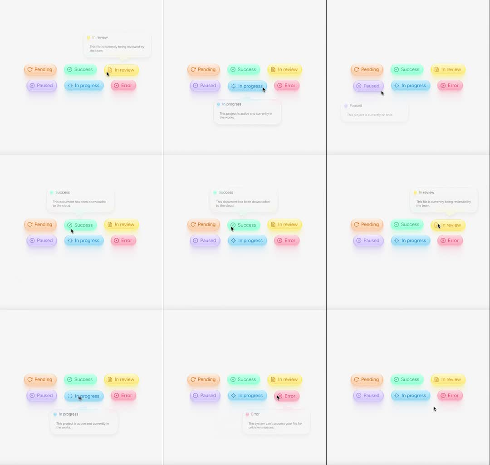

Status tags with glass bubble: six pastel glassmorphic status pills (Pending orange, Success mint, In review yellow, Paused purple, In progress blue, Error pink, each with a tiny icon) on a soft grey field; hovering a pill summons a frosted-glass tooltip bubble with the status name (colored dot + label) and a one-line description, tail pointing at the pill; bubble follows hover between pills with a spring.

Build glass status tags with a morphing tooltip. Row of 6 pills: 30px high, 16px radius, fill = status color at 12% alpha + 1px border at 35% alpha + inner top highlight (white/60, 40% height, blur 4) for the glass look; 12px label in the status color + 12px line icon (Pending: rotate-ccw, Success: check, In review: file-text, Paused: pause-circle, In progress: loader-asterisk, Error: alert). One shared tooltip: frosted glass (white/70, backdrop-blur 12, 16px radius, 1px white border, soft shadow) with header row (8px colored dot + status name 12px semibold) and 12px grey description; small tail triangle. On hover: tooltip animates from the previous pill to the new one - FLIP-morph position and width over 250ms spring, text crossfades 150ms; tail stays glued to the target pill's center; hovered pill's glow (colored drop-shadow 0 4px 16px color/35) ramps in. Flip to below-placement when the row is near viewport top.